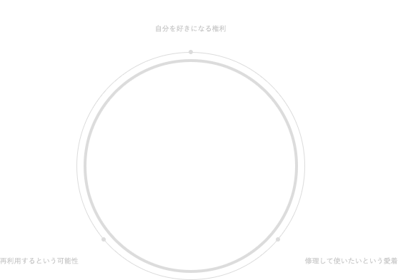

事業内容SERVICE
SERVICE
- HOME
- SERVICE
DIGITAL TECHNOLOGY-HUMANS
SUSTAINABLE RELATIONSHIP
人とデジタルが共生する心豊かな日常

デジフォースは3つの事業活動（とそこで生み出す価値）を通して
“より良い未来”を創造します。
事業沿革SERVICE HISTORY
さらに、リペア事業で磨いたバッテリーに関する知見を携え、充電器（ACアダプタ）の開発を試みる（2020年）。それがコンシューマー事業として成⻑し、スマホ・PC・ゲーム周辺機器まで商品ラインナップを広げ、現在に至る。
-
01.コンシューマー事業CONSUMER
コンシューマー事業では、私たちが提案する商品を選び使っていただくことを通して、“自分らしさに気づき、自分のことがもっと好きになれる”、このような体験を提供していきます。
-
02.リペア事業REPAIR
リペア事業では、私たちのパーツを採用いただく修理店でのサービスを介して、“愛着のあるデジタル端末を⻑く使いたいという思いに応える機会”を広めていきます。
-
03.リユース事業REUSE
リユース事業では、あらゆる状態にある中古デジタル端末を買取させていただくことを経て、“ものを捨てずに再利用するという可能性”が感じられ、その行為が浸透するように働きかけていきます。
CONSUMER
01.コンシューマー事業CONSUMERスマホ・PC・ゲーム周辺機器（デジタル・ガジェット）の開発・製造・販売

デザインを重視した商品開発で、デジタルスタイルに新しい選択肢と心揺さぶるユーザー体験を提案します。
日常的なデジタル・アイテムをスマートでスタイリッシュに彩ることができたら、きっと毎日が楽しくなるはず。そんな情感から生み出されるブランドを通して、自分らしさを育み発展させていきます。
CONCEPT商品開発コンセプト
私たちは、ユーザビリティ（usability）を第一に考えて商品開発を行っています。デジフォースが追求するのは、無駄のない有効な機能を備え、わかりやすく快適に利用できるかどうか。これを叶えることで、商品化が本格的にはじまります。なお、ユーザビリティのゴールは顧客の声です。なぜなら、実際の利用場面を想定し、リアルに触って使って確かめることでしかわからないことがあるからです。顧客からのフィードバックに対して真摯に耳を傾け、検証を繰り返すことでプロダクトの安定した土台を築いています。
その上に、洗練されたフォルムやカラーバリエーションからなるビジュアルを加え、自らの意思で選び使い続けることで得られる自己肯定感につなげていきます。プロダクトのユーザビリティにゆるぎない自信を備えているからこそ、ファッショナブルな着想を大胆に表現できることが私たちの特⻑です。デジフォースは、開発プロセス全体をデザインで包み込み、“自分らしさに気づき、自分のことが今まで以上に好きになる”、そのような瞬間（きっかけ）が与えられることを願っています。
REPAIR
02.リペア事業REPAIRデジタル端末（iPhone、iPad、apple watch）の修理パーツ開発・製造および卸・販売
リペア交換後に生じる旧パーツ（割れガラス*1・パネルや廃棄バッテリー*2）の買取・回収を通して、リサイクル活動にも貢献しながら、修理事業のさらなる進展を提案します。
デジフォース・リサイクルモデル
REUSE
03.リユース事業REUSEデジタル端末（iPhone、iPad、apple watch）の買取
リユース市場を形成する法人各社との協業を通して、中古流通マーケットの活性化を後方から⽀援します。
国内リユース・マーケット活性化モデル

FEATURES特⻑
デジフォースのリユース事業は、赤ロム*1やジャンク品*2の高価買取を強みにしており、再利用の枠を広げ、ユーザーへ提案することに貢献しています。
*1 携帯電話会社によって「ネットワーク利⽤制限」がかけられているスマートフォンのこと*2 動作不良、パーツ⽋損など、正常に動作しない、またはその動作が確認できない商品
中古端末検品ランク
| ジャンク・ゾーン | ||||
|---|---|---|---|---|
| ランク | A | B | C | D |
| iphoneの状態 （赤ロム含む） |
正常動作&純正液晶 | 正常動作&純正液晶不良 （正面・背面のガラス割・欠） |
動作不良（バイブレーション・ カメラ・ホームボタン）& 液晶不良（非純正・液漏れ・タッチ） |
動作不良（起動NG・ アクティベーション不良・ IDあり・パスコードロックあり） |
| 動作 | 症状 | 症状 | 症状 | |
| 起動 | ○ | ○ | ▲ | |
| バイブレーション | ○ | ▲ | - | |
| カメラ（in out） | ○ | ▲ | - | |
| ホームボタン | ○ | ▲ | - | |
| 液晶パネル | 症状 | 症状 | 症状 | |
| 純正 | ○ | ▲ | - | |
| 割れ | ▲ | - | - | |
| 液漏れ | ○ | ▲ | - | |
| タッチ | ○ | ▲ | - | |
ジャンク度が深まるほど
バイイング・パワーUP